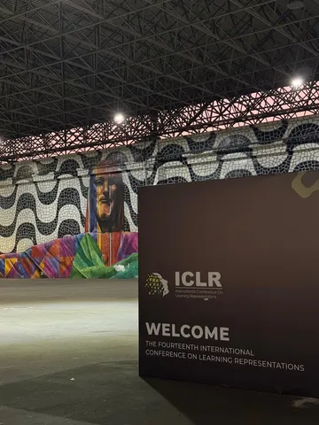
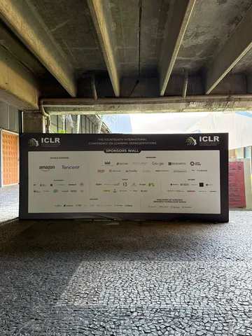
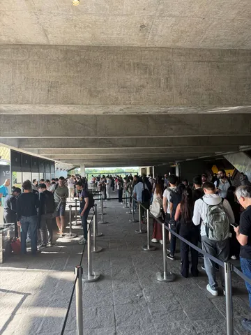

Конференция, которая закончилась в Рио, оставила после себя много впечатлений и любопытных мыслей. Ими сегодня поделится с нашим каналом СТО поисковых сервисов и ИИ Яндекса Алексей Гусаков.
RL сейчас становится одним из самых дорогих и плохо предсказуемых этапов после претрейна — особенно, если много генерировать длинные reasoning/tool-calling-траектории. Допустим, мы используем GRPO: берём батч запросов, и для каждого сэмплируем G траекторий/ответов. Для них считаем reward, а advantage определяется относительно остальных ответов на тот же запрос.
Если запрос слишком лёгкий или слишком сложный, все G ответов могут получить одинаковый reward — например, все правильные или все неправильные. Тогда такой пример даёт мало полезного RL-сигнала. Помимо этого, цепочки генерировать дорого, а длинные — очень дорого. Несколько классов идей о борьбе с этим:
1. Curriculum — идея не новая. Давайте растить сложность запросов в процессе улучшения модели. Есть много вариантов, как это делать. Один из них — использовать трансформерное предсказание сложности и бандитов. Думаю, конкретная реализация не так важна, главное, что при смешивании множества RL-сред в одном обучении единой модели нужно иметь хорошие мониторинги доли успехов по каждой задаче и бороться, если возникает проблема.
2. Генерировать роллауты не каждый раз с нуля, а начинать с префиксов предыдущих. Тогда можно получить больше бит информации на единицу компьюта и получить дерево траекторий. Для внутренних вершин дерева можно подсчитывать статистику успехов и использовать для process reward.
3. В случае, если основной тул в цепочках — это web search, то можно отдельно оценивать, насколько очередное добавление в инфоконтекст полезно: нельзя ли было дать ответ без него и продвинуло ли оно к правильному ответу (observation reward).
Комбинация второго и третьего подходов заставила меня вспомнить AlphaZero, где модель предсказывает распределение по возможным ходам P и оценку позиции Value. Затем Tree Search строит дерево и получает более информативную статистику по ходам, после чего модель учится приближать результаты этого Tree Search.
В LLM-случае «ход» — это не дискретный шахматный ход, а кусок reasoning плюс очередной tool call, плюс observation, и пространство ходов не только больше, но и гораздо менее структурированное. Напрямую не используешь, но точно интересно подумать над экспериментами, где после генерации скольки-то роллаутов из позиции переранжируем их по process и observation reward.
4. Scaling recipes плюс scaling laws для RL. Тема неплохо изучена для претрейна. В Meta* считают, что у них работает для RL. Scaling там устроен по-другому — имеет форму сигмоиды и можно экстраполировать качество с малых запусков на более крупные. Если правда работает, точно надо использовать — особенно, когда смешиваем несколько RL-сред для понимания, сколько нужно тратить компьюта на оптимизацию каждой.
И немного о том, как всё (или почти всё) успеть на конференции.
Чтобы повысить продуктивность, к каждому дню нужно готовиться минимум по паре часов, составляя с LLM-ассистентом план того, что хочешь посетить. Помогают промпты в стиле «Завтра утренняя постер-сессия на ICLR, интересны такие-то темы, в основном топовые лабы, раньше были интересны такие-то работы. Что посмотреть?» Дальше фильтруешь, просишь отсортировать постеры, часть просишь удалить, а где-то предлагаешь добавить. Затратно, но зато не просто бродишь, читая бесконечные названия статей.
#YaICLR26
ML Underhood
__
Компания Meta признана экстремистской; её деятельность в России запрещена.


